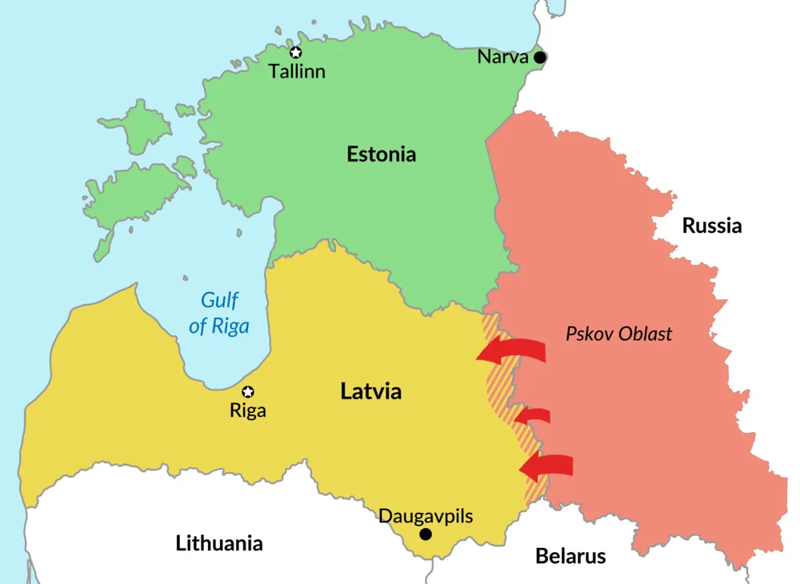

Utrikes

Rysk invasion: Lettland - Nato artikel fyra använing?
Den senaste veckan har Ryssland testat vattnet hos en mängd öst-europeiska NATO länders territorium och den senaste av alla dessa är Rysslands fullskaliga invasion av Lettland tidigt i söndags. I en X (tidigare Twitter) post skriver Polens utrikesminister att Polen ser allvarligt på situationen och ger Lettland sitt fulla stöd**,** men kommer inte att assistera militärt. Sverige ser mer allvarligt på situationen och under en presskonferens sa Ulf Kristersson (M) att Rysslands "upptrappning" kan tvinga NATO att kalla på artikel fyra. Finland har speglat Sveriges respons men gör det tydligt att situationen fortfarande utvecklas. Men frågan om NATOs artikel fyra ska aktiveras ligger slutgiltigt i om europeiska ledare tror att de kommer ha Trump på sin sida. Trump svarande Times efter att de frågade hur presidenten skulle reagera på Rysslands invasion av Lettland med "Lettland?". Kremlin svarade att om de vinner kriget kommer de döpa om Lettland till "Svårland".